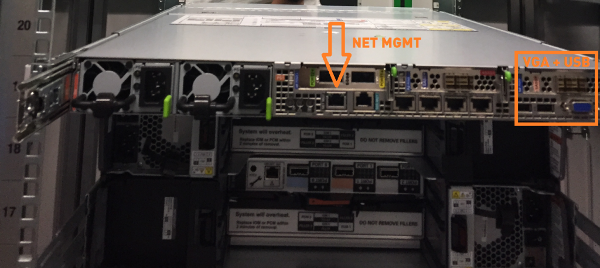
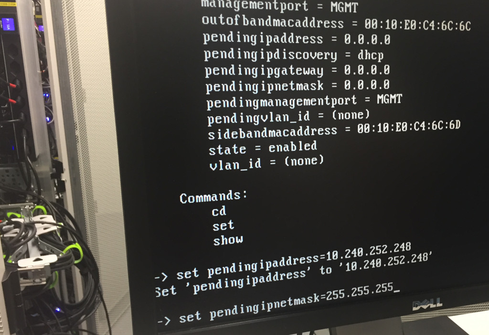
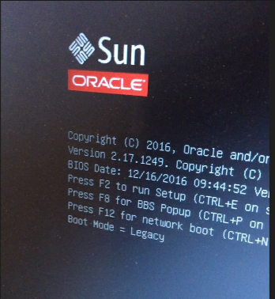

|
|
This was first published on https://blog.dbi-services.com/oda-x6-installation-re-image (2017-06-28)
Republishing here for new followers. The content is related to the the versions available at the publication date
The Oracle Database Appliance is shipped with a bare-metal installation which may not be the latest version. You may want to have it virtualized, or get the latest version to avoid further upgrade, or install an earlier version to be in the same configuration as another ODA already in production. The easiest for all cases is to start with a re-image as soon as the ODA is plugged. This post is not a documentation, just a quick cheat sheet. I don’t want to spend hours in the data center, so the first step, once the ODA is racked, cabled and plugged, is to get it accessible from the management network. Then all tasks can be done from a laptop, accessing the ILOM interface through a browser (Java required, and preferably 32-bits) before the public network is setup.
Here is the back of the server where you find the management network port.  This was an X5-2 but very similar to X6-2. You can look at the 3D view of X6-2 to get a better view. There is also VGA and USB to plug a monitor and keyboard just for the time to setup the management network.
You can also use the serial port which is just next to it but I usually don’t have a serial adapter for my laptop.
You can plug a keyboard and monitor and log on the server: root password is welcome1 (no need to change it for the moment as we will re-image the machine)
In ODA X6-HA you have two nodes, numbered 0 and 1 and called oak1 and oak2 … be careful. You may wonder which server is node 0 and which one is node 1, because the servers are the same. Yes, that’s true. The nodes are identified from the storage port they are connected to. The node 0 is the one connected to the blue mini-SAS and the red ones are for node 1.
Here I’m on node 0 and check hardware version
[root@oak1 ~]# /opt/oracle/oak/bin/oakcli show env_hw BM ODA X6-2This means Bare Metal X6-2 HA, a virtualized one would show VM-ODA_BASE ODA X6-2, and ODA X6-2S would show BM ODA_Lite X6-2 Small.
From storage topology, we confirm that this node has been recognized as node 0:
[root@oak1 ~]# /opt/oracle/oak/bin/oakcli validate -c StorageTopology It may take a while. Please wait... INFO : ODA Topology Verification INFO : Running on Node0 INFO : Check hardware type SUCCESS : Type of hardware found : X5-2 INFO : Check for Environment (Bare Metal or Virtual Machine)
And finally check the version because you may be lucky to get the version you want and then don’t need to re-image (I switched to node 1 here):
Of course, you don’t need to re-image when you want an higher version. You can upgrade it, but re-image is simple.
The management network interface can get an address from DHCP. But who runs DHCP on the management network? There are two ways to assign a static IP to the management network.
You may use the IPMI Tool commands:
ipmitool -I open sunoem cli cd SP cd Network ls set pendingipadress=192.168.15.101 set pendingnetmask=255.255.255.0 set pendingipgateway=192.168.15.1 set commitpending=trueHere is an example: 
Or you can go to BIOS. It goes fast but filming in slow motion shows that the key is F2:  Once you are in the BIOS interface, go to Advanced, then choose ‘BMC Network configuration’ to configure IPMI and enter the following BMC Lan information: IPv4 IP Assignment [Static] IPv4 address 192.168.15.102 IPv4 Subnet Mask 255.255.255.0 IPv4 Default Gateway 192.168.15.1
Once you are in the BIOS you can choose to boot on the CD-ROM first because I sometimes have problems to set that from the ILOM Web interface.
Once you have validated that the ILOM IP address can be reached from your office, you can remove the keyboard and monitor and leave the datacenter. the hardware is ok. Now the software can be deployed from the ILOM Web interface. The password to connect to ILOM from the Web browser is ‘changeme’ and you should change it.
The latest ISO image for Bare Metal or Virtualized ODA can be found from Note 88888.1 You can also find the oldest versions:
From the ILOM you you get to the console of node 0:
From there, you can attach the ISO image: ILOM Remote Control / Devices / CD-ROM Images
and then reboot on the CD-ROM:
Reboot (Host Control / Next Boot Device / CD-ROM )
Do that for both nodes (you can run them at the same time) and prepare the information for the deployment and download the ‘End-User RDBMS Clone files’ for the database version you want.
You can download the Oracle Appliance Manager Configurator and take your time to setup and verify the configuration.
Here is part of the information to prepare. First, you will configure the network to be able to scp the software (Grid Infrastructure and Database):
[root@oak1 ~]# /opt/oracle/oak/bin/oakcli configure firstnet Configure the network for node(s) (local,global) [global]: The network configuration for both nodes: hostname: Hostname lookup failure Domain Name: pachot.net DNS Servers: Primary DNS Server: 8.8.8.8 Node Name Host Name 0 myserver1 1 myserver2 Choose the network interface to configure (net1,net2) [net1]: Enter the IP address for net1 on Node 0: 192.168.16.101 Enter the IP address for net1 on Node 1: 192.168.16.102 Netmask for net1: 255.255.255.0 Gateway address for net1 [192.168.16.1]:
Note that this is a funny example. I hope you don’t use the 192.168.16/24 as you public network because this is used for the private interconnect where IP addresses 192.168.16.24 and 192.168.16.25 are hardcoded. But thanks to that the configure-network can be run fron one node only.
Now that you have access through the public network, you can copy (scp) the Oracle Home clones and the configuration file to /tmp, unpack the .zip (for i in *.zip ; do /opt/oracle/oak/bin/oakcli unpack -package $i ; done) and run deploy (ssh -X /opt/oracle/oak/bin/oakcli deploy), loading the configuration from your file or entering all information from there. Crossing the fingers, this should go to the end without any problem. On the opposite, My Oracle Support notes may help. The nice thing with ODA is that most of the configurations are similar so there a good chances that a problem was already encountered and documented.
{kind=link}
{kind=link}
{kind=link}
{kind=link}
{kind=link}